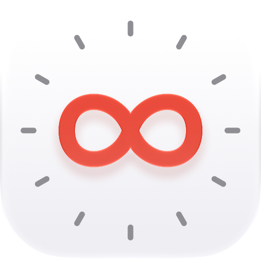

Privacy
Your calendar stays on your Mac. The plugin has no account, no analytics, and no server of its own.
The plugin
- A small helper app that comes with the plugin reads today's events and your list of calendars with macOS's calendar access, which you allow when you first add the key. You can turn it off any time in System Settings → Privacy & Security → Calendars.
- The helper saves those events and the calendar list to
~/Library/Caches/com.joeangell.calendar-alerts/on your Mac, where the plugin reads them to draw the key. - The plugin talks only to the Stream Deck app on the same Mac, over a local connection. It doesn't send your events, or anything else, over the internet.
- Each key's settings, such as which calendars it shows, are saved by the Stream Deck app.
- When you press the key, it opens the app or web page you chose for it. If that's a web calendar, your browser loads it as it would any other page.
To remove everything, quit Stream Deck and delete ~/Library/Application Support/com.elgato.StreamDeck/Plugins/com.joeangell.calendar-alerts.sdPlugin and ~/Library/Caches/com.joeangell.calendar-alerts.
This site
This site has no cookies, analytics or trackers. It's hosted by GitHub Pages, and the download comes from GitHub's releases; GitHub may log visits as described in the GitHub Privacy Statement.
Questions
The plugin is open source, so you can read exactly what it does on GitHub. Questions are welcome as issues there.